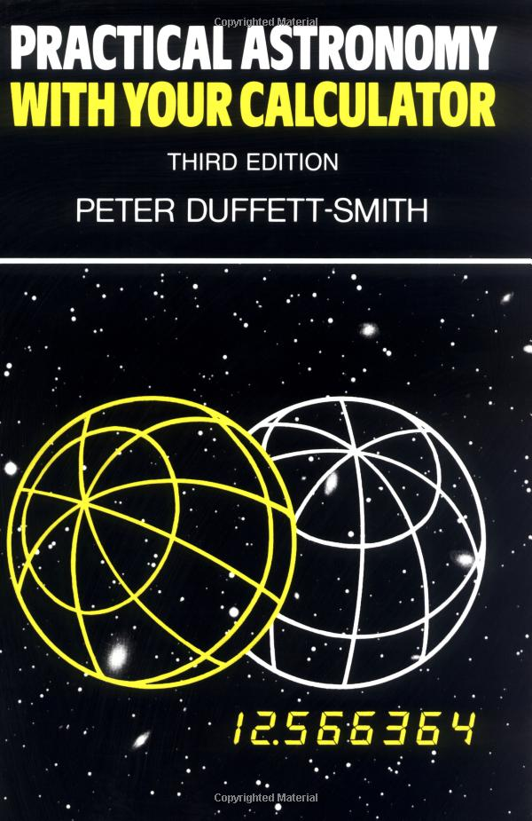
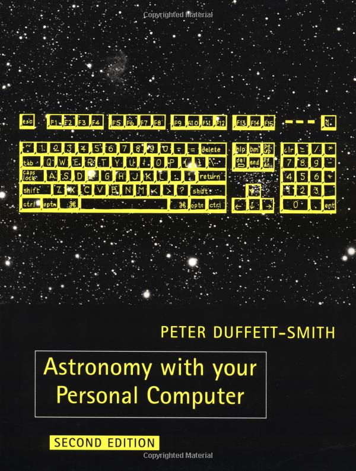

 
CDT 19:00:00 4/30/1990 | LST 8:19:50 |
UTC 0:00:00 5/01/1990 | |
JulianDat 2448012.50000 | Dawn 4:10 |
Watch | Dusk 22:15 |
Listing off | NiteLn 5:55 |
Plot off | NStep 1 |
Menu Planet Data | StpSz RT CLOCK |
---------------------------------------------
OCX R.A. Dec Az Alt H Long H Lat
Su 2:32.3 14:58 278:40 12:38 220:22
Mo 8:09.9 21:11 186:06 65:53 119:55 1:04
Me 2:49.4 17:39 277:48 17:26 214:08 1:43
Ve 23:49.4 -2:25 296:53 -27:39 282:39 -1:30
Ma 22:39.8 -10:09 308:17 -44:14 297:56 -1:43
Ju 6:30.9 23:23 235:13 59:04 106:16 0:08
Sa 19:49.6 -20:53 17:24 -65:14 289:45 0:10
X11/Intrinsic.h: No such file or directory
...
$ apt-file search X11/Intrinsic.h
libxt-dev: /usr/include/X11/Intrinsic.h
/usr/bin/ld: cannot find -lXext
...
$ apt-file search libXext.a
libxext-dev: /usr/lib/i386-linux-gnu/libXext.a
Wrapper around libastro
body = Obj()
body.any.type = ephem.PLANET
body.pl.code = ephem.SUN
ephem.computeLocation(circum, body)
print ephem.formatHours(o.any.ra, 36000)
print ephem.formatDegrees(o.any.dec, 3600)
static PyGetSetDef body_getset[] = {
{"ra", get_ra, 0, "right ascension"},
{"dec", get_dec, 0, "declination"},
{"elong", get_elong, 0, "elongation"},
{"mag", get_mag, 0, "magnitude"},
⋮
}
# ephem/__init__.py
import _libastro
⋮
mars = ephem.Mars()
mars.compute()
print mars.ra, mars.dec
Early 2000s
Subject: PyEphem Win32 build errors
Subject: win32, does PhEphem work there too?
Subject: trying to download but I cant unzip it
Late 2000s
Subject: pyephem on Mac PPC
Subject: pyEphem won’t build on Snow Leopard
Subject: PyEphem … Installation error in opensuse
Subject: PyEphem on Ubuntu 10.10
Subject: Pyephem on a 64-bit Win 7 PC?
Mac
Windows
python setup.py bdist_wininst
They are difficult to—
# ftp://ssd.jpl.nasa.gov/pub/eph/planets/ascii/
Name Date Modified
⋮
de405/ 10/7/07 8:00:00 PM
de406/ 3/22/11 8:00:00 PM
⋮
de421/ 2/6/13 7:00:00 PM
de422/ 8/3/11 8:00:00 PM
de423/ 3/30/10 8:00:00 PM
⋮
py.test --pyargs skyfield \
--doctest-glob='*.rst'
assert c.cal_date(jd) == timescales.cal_date(jd)
setup(
...
packages=['skyfield', 'skyfield.tests'],
...
)
setup(
...
package_data = {
'skyfield': ['documentation/*.rst']},
...
)
GPL or MIT?
Free world Closed world
────────── ────────────
Awesome! Less awesome
↑ ↑
Your library → × Alternative?
Rewrite?
Free world Closed world
────────── ────────────
Awesome! Closed awesome
↑ ↑
Your library → Your library
(Look closely — Open Source everywhere!)
Free world Closed world
────────── ────────────
Awesome! Closed awesome
↑ ↑
Your library → Your library
Then I might be doing it wrong
Young
Old
Big slog: risks everything!
here →→→→→ new feature
here → • → • → • → • → new feature
Incremental: cheap to revert
“Explicit is better than implicit”
d = '2012/11/9'
m = ephem.mars(d)
print(m.a_ra, m.a_dec)
# Skyfield, instead:
d = JulianDate('2012/11/9')
p = earth(d).observe(mars).astrometric()
print(p.ra, p.dec)
mars = ephem.Mars()
mars.compute('2012/11/9')
print(m.ra, m.dec)
# Mars
# .name
# .date
# .compute() →↘
# .ra ↖ ↓
# .dec ←←←←←←←↙
# ⋮
# PyEphem:
positions = []
for date in dates:
mars.compute(d)
positions.append((mars.ra, mars.dec))
# Skyfield:
coords = [mars(d).astrometric() for d in dates]
positions = [(c.ra, c.dec) for c in coords]
Look familiar?
letters = list(set(message_string))
letters.sort()
print ''.join(letters)
# vs
print ''.join(sorted(set(message_string)))
outputs = sorted(inputs)
# PyEphem
m = ephem.mars('2012/11/9')
print(m.name) # zero work
print(m.ra, m.dec) # computed
print(m.rise_time) # expensive!
mars.name # looks cheap
mars.apparent() # looks expensive!
# “I can use this over and over again!”
mars.name
# “Looks expensive; I’ll save the
# result to a local name instead.”
mars.apparent()
The big lesson?
Write APIs that TEACH!
r = urllib2.urlopen(url) # bad
r = requests.get(url) # good
r = requests.get(url)
mars.a_ra, mars.a_dec # astrometric
mars.g_ra, mars.g_dec # apparent geocentric
mars.ra, mars.dec # apparent topocentric
mars.alt, mars.az # apparent horizontal
here = toronto(jd)
here.observe(mars).astrometric()
here.observe(mars).apparent().equatorial()
here.observe(mars).apparent().horizontal()
m = Mars(date)
print(constellation(m.ra, m.dec))
# This function can ONLY EVER be passed
# a right ascension and declination; why
# not make it a coordinate method?
m = Mars(date)
print m.ra # prints one thing
toronto.next_rising(m)
print m.ra # something different!
(Jedi!)
class Sample(object):
@property
def loud(self):
return self.message.upper()
Problem: hidden expense
So, we cache
class Sample(object):
_loud = None
@property
def loud(self):
if _loud is None:
self._loud = self.message.upper()
return self._loud
class Sample(object):
def __getattr__(self, name):
if name == 'loud':
self.loud = self.message.upper()
return self.loud
raise AttributeError()
def f(x, y):
return sqrt(x*x + y*y)
print(f(3, 4))
# => 5
x = array([3, 8, 60])
y = array([4, 6, 80])
print(f(x, y))
# => array([5, 10, 100])
# Number!
jd = today()
p = earth(jd).observe(planet)
# Vector!
jd = date_range('1980/1/1', '2010/1/1', 1.0)
p = earth(jd).observe(planet)
n = compute_nutation(jd)
p = compute_precession(jd.tdb)
f = J2000_to_ICRS
t = einsum('jin,kjn->ikn', n, p)
t = einsum('ijn,jk->ikn', t, f)
pos = einsum('in,ijn->jn', pos, t)
vel = einsum('in,ijn->jn', vel, t)
Vi Hart says τ = 2𝜋
Should dunder-init import things?
# __init__.py
from .earthlib import Topos
from .planets import Jupiter
to allow
from skyfield import Topos, Jupiter
from skyfield import Topos
print type(Topos)
# => <class 'skyfield.coordinates.Topos'>
setup(
⋮
install_requires=['de421'],
)
def f(...):
⋮
# 20 lines of code
⋮
if final_decision():
action1
else:
action2
Answers go out of date
Lesson #1
New GitHub issue
I was unhappy
“Can you help me?”
“Can you help me?”
yes
import sys
open(
'/tmp/emergency.log', 'w'
).write(
str(sys.path) + '\n'
)
import sys
sys.path.append(
'/home/astronomia/.local/lib64'
'/python2.6/site-packages'
)
It worked
Lesson #2
October 2012 — I put NOVAS on PyPI
pip install novas
(a list of bugs followed)
Not my library — not my problem
Assistant Director for Exploration
...@nasa.gov
USNO → me → NASA